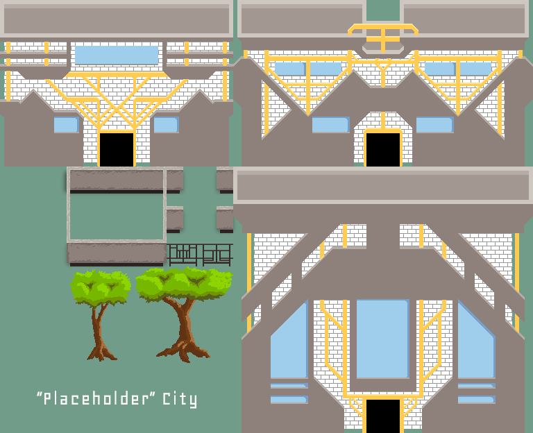

When I first decided to declare a career change to something in video game design, I understood that I needed to take classes and learn as much as possible. In the process of taking this class, I learned that I tend to over-complicate my design by choosing to hand-draw everything and adding everything and anything my mind is attracted to. I do not think I plan on changing that aspect of my work ethic anytime soon because it lead to me pushing myself as much as possible.